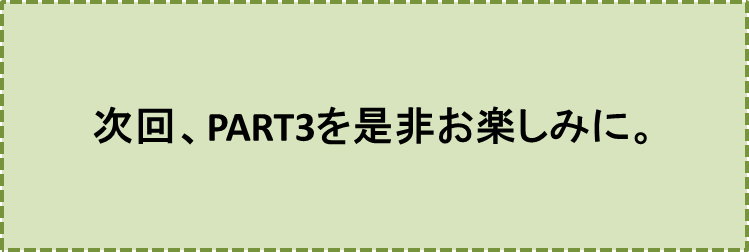

三郎と幸福のホテル-PART2-
『破作郎の凱旋』の巻
笠原正雄
良く晴れたある日の朝、シオニー村の大通りに面した教会の鐘の音が四方に鳴り渡り、お日様が山の端（は）からほんの少し顔を出した頃から、沢山の人達が大通りに集まってきました。人々は、そわそわした様子で何かを待ち構えています。
……彼等には希望に胸を膨らませて、何かを待っているといった様子は見受けられませんでした。
彼らの胸に燃えているものは、ただただ好奇心だけのように思えます。
好奇心だけでありましたけれど、朝やるべき仕事、洗濯、朝食の後片付けなども手がつかなかったほどに、大きなおーきな好奇心だったでしょう。
大通りで待ち続けている人々が、口々にしている人物、それはある男のことです。
男の名は破作郎（はさくろう）と申しますが、つい二、三年前まで、このシオニー村に住んでいました。
三郎と同じように、早くに亡くなった両親からあり余る程の森と土地とを譲り受けていたのでしたが、三郎とは全く対照的な生活ぶりでした。
シオニー村でも一、二を争うほどの森や土地は、破作郎が始めた慣れない金融取引、商品取引等のために切り売りされ、二、三年ですっかり他人の手に渡ってしまいました。
畑仕事には全く精を出しませんでしたので、破作郎の結末は誰の目にも明らかでした。
ある寒い日の朝、僅かばかりの身の回り品を持って、彼はシオニー村を後にしたのでした。
足の赴（おもむ）くままに歩いた末、辿り着いた町で仕事を見つけましたが、運にも恵まれたのでしょう、半年も経たないうちに一財産を作り上げ、このハノーザ国でも有数の実業家になっていました。
人々の大きな好奇心の的は、功なり名を遂げた破作郎が、シオニー村を訪れるということでした。彼がどんな風にして訪れるのか、誰も知りませんでしたので村人達は色んなことをさまざまに想像し、期待に胸を膨らませていました。
シオニー村の教会の牧師は
「きっと破作郎は教会に多額の寄付をしてくれるだろう。というのも……」
と言った後、満面の笑みを浮かべ
「破作郎が、親から譲り受けた有り余る程の財産を全て使い果たし、最後には物もらいをしている頃に、私は神様に代わって食べ物や着る物を与えたからですよ……」
と自信たっぷりに話します。
牧師はさらに
「もし彼が神様の愛を身に染みて感じ、私の教えた通りに実行しているなら……、間違いなく教会に立ち寄ってくれるでしょう」
と言葉を続けます。
人々は牧師の言うことは尤もなことだと思いました。
シオニー村の人々の殆んどが、最後には冷たくそして軽蔑の眼（まなこ）を注いでいた時にも、教会の牧師だけはまるで違いました。我が子のように愛情を一杯に注ぎ、とても温かく優しく父親のように接していたのですから。
教会の鐘が四方に鳴り渡り、空は雲一つないブルースカイ、風はそよ風、お祭り騒ぎにはもってこいの天気になりました。
破作郎が落ちぶれたときには見向きもしなかった、他所（よそ）の村や町に住んでいる親類縁者達が、この日のために、徹夜で用意しておいたという手作りの旗を沢山に持って、広場の大通りに集まってきます。いずこからともなく現れた親類縁者と名乗る人達が持参した旗は、出迎えの人々の手に行き渡りました。
旗には破作郎の似顔絵が描かれ、
“破作郎さん、万才！！”
と大きく記されています。
この日の朝もいつもの作業着姿で、畑や森、丘へと急ぐ何人かの男女達は、このお祭り騒ぎのような歓迎陣に思わず足を止め、目を見張ります。驚き一杯の表情で声をかけます。
「お前さん達、一体何事！？ これは……」
出迎えの人達が一斉に答えます。
“破作郎だよ。あの破作郎が、シオニー村に帰ってくるのさ！
最後は物もらいまでしていたあの破作郎が、今はハノーザでも指折りの実業家になって凱旋するってわけだよ！”
若い働き者の男女達は持っていいた鋤や鍬、籠などを落とさんばかりにのけぞって笑いました。
彼等はお腹（なか）の底から笑った後、天を指差して言います。
「朝から忙しくしているのは、そんなことだったのか！」
彼らは、もう一度笑いこけた後、続けます。
「こんな晴れた日に朝から遊んでいるなんて、随分もったいない話だ。
破作郎が何になろうと私達には知ったことではない筈だよ。
旗を手にして行列を作る暇があるなら一汗流すがいい……」
こう言い終わると彼等は振り返って見ることもしないで、畑を耕しに、あるいは森の木を切るために、牛を連れて丘を上がっていきました。
不思議なことにシオニー村切っての働き者と言われている三郎の姿は、これらの働き者の中にいませんでした。
三郎だけは、なるべく人目につかないよう出迎えの人達の後ろの方に立って、破作郎が凱旋してくるのを待っていたのです。
三郎は目立たないよう努めながらも、老人と目が合えばいとも丁寧に帽子を取って挨拶をし、女性達と会うと、こぼれんばかりの笑顔で言葉をかけることも忘れませんでした。
……しかし、人々は
“この村一番の働き者の三郎が畑に出かけることもしないで、こうして私達と一緒にいるのは、不思議なことだ。
沢山の働き者達が、私達の様子を見て笑って仕事に出掛けたのに……”
と首をかしげます。
今か、今かと待ちくたびれていた人々の前に、真っ赤な色、濃い緑色、二つの色に鮮やかに、塗り分けられた最新型のオープンカーが、現れました。破作郎が中央のシートに腰を下ろしています。
黒っぽい背広を着こなし、その胸には沢山の勲章がぶら下がり、お日様の光に、キラキラまぶしく輝いています。
“破作郎万歳！”
人々は声をあげ、旗を振って歓迎します。
オープンカーに乗っている破作郎は、堂々たる体格、この国でも一、二を争う実業家になっていたのです。
しかし、あゝしかし、その表情は、なんと冷たく、なんと無感動なことなのでしょう。
人々の歓呼の叫びも、万歳！ という叫びも、拍手の嵐も全て耳に入らず、打ち振られる旗も全く目に入らないという風に、無表情無感動に、ただただ、じっと真っ直ぐ前を見詰めているだけではありませんか。
彼は、何を見詰めているのでしょう。瞬きもせず、口元を真一文字に引き締め、決して緩めることがありません。
人々は破作郎の態度に驚きました。
まるで彫刻で作った人間のように、眉一つ動かさないでオープンカーに座っています。
この様子に三郎は、ふうっと大きく溜息をつきました。
まさにこの瞬間です。破作郎の目が、三郎の方を鋭く見詰めました。研ぎ澄ました刃物のように冷たく、鈍く光る目が、三郎の目を突き刺すように射抜きます。
……破作郎の眼は、オープンカーのゆっくりした動きにも拘わらず、三郎を見詰め続けました。
破作郎の目に耐えられなくなった三郎が、目をそらそうと思った瞬間、再び元通りの彫刻で作った人のようになり、身動き一つせず真っ直ぐ前を見詰めたまま、村の大通りをゆっくりと進んで行きました。
三郎は顔を真っ赤にして、突っ立っていました。未だかつて、何人(なにびと)も恐れたことはありませんでしたが、たった今、自分を見詰めていた鋭い刃物のような破作郎の目が、例えようのないほど恐ろしいもののように感じられました。
破作郎の一行は、ゆっくり村の大通りを抜け、去って行きました。教会にもどこにも立ち寄らずに……。
旗まで持って出迎えた人々はあっけにとられ、そして口々に何やらつぶやいて、家へと引き揚げました。
今の今まで期待していたものが、ことごとく打ち破られてしまいました。全く彫刻で作った人のように眉一つ動かさず無表情のまゝ村を訪れ、立ち去っていった破作郎。一体どう解釈したらよいのでしょうか……。
人々の表情は、まるで恐ろしいものでも見たように、青ざめていたでしょう。それほどに大きなショックを心に受けて、家に引き揚げたり、あるいは畑や森に向ったのでした。
村の大通りに残った者は、三郎ただ一人だけです。
教会の鐘は、もはや鳴り止み、お日様は、空高く真上にまで、昇っていました。
三郎は、歩く元気すらないように見えました。
やがて気を取りなおしたのでしょう。畑に向って弱々しく歩き始めました。
♪♪♪♪コーヒーブレイク♪♪♪♪
ハノーザ国での、私にとって思いもよらぬ人物、三郎、との出会い。
私は彼の将来に大きな可能性を感じてこの国にしばらく、とどまることを決心しました。
……しかし、彼の行く手に現れた“破作郎”の姿に、三郎は大きなショックを受けたようですね。
世の中ではこんな経験は、勿論姿は大きく変わるでしょうか、よくあることですよね。
